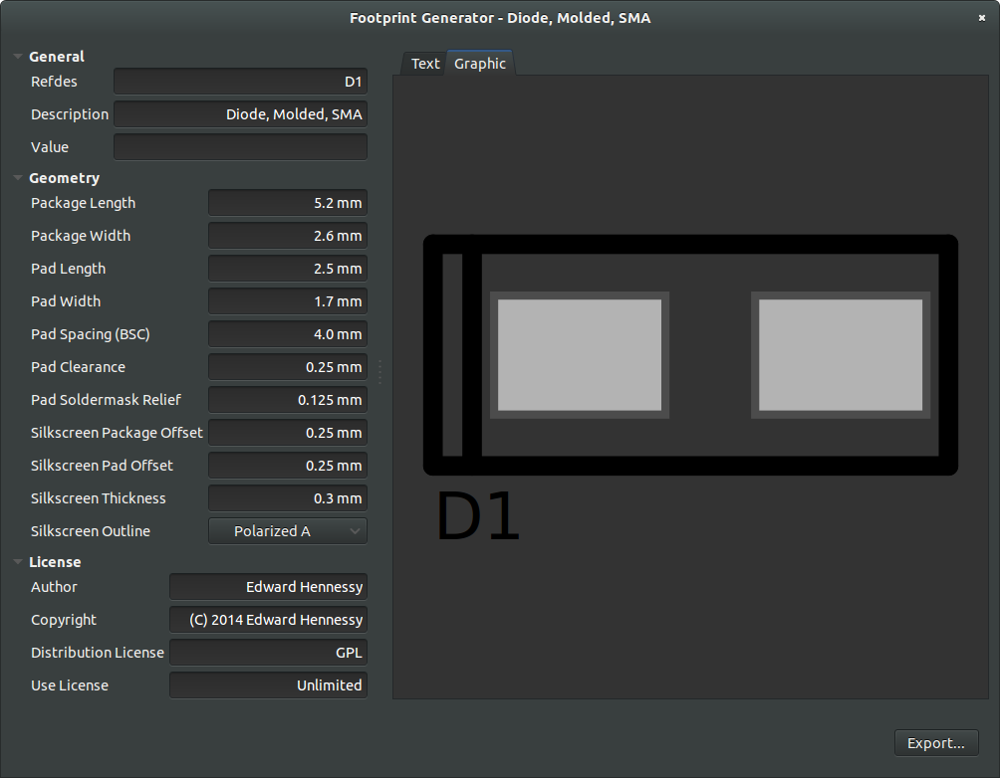

This footprint generator allows the user to quickly generate two pad SMD device footprints for use with PCB.
Currently, the footprint generator is packaged as a single Ruby source file.
footgen.rb.tar.gzHere are the packages that should be installed.
Adjust the footprint parameters at the left.
Numeric parameters accept both mm and mil for units. Any parsing errors will default to mm.
| Package Length | The length of the package (along the x axis). Used to calculate the silkscreen border. |
| Package Width | The width of the package (along the y axis). Used to calculate the silkscreen border. |
| Pad Length | The length of the copper pad. (x axis) |
| Pad Width | The width of the copper pad. (y axis) |
| Pad Spacing (BSC) | The spacing between the pads, from center to center. |
| Pad Clearance | The minimum distance from the copper pad to surrounding copper. |
| Pad Soldermask Relief | The minimum distance from the copper pad to the soldermask opening. |
| Silkscreen Package Offset | The additional distance from the edge of the package to the centerline of the silkscreen. |
| Silkscreen Pad Offset | The additional distance from the edge of the pad copper to the centerline of the silkscreen. |
| Silkscreen Thickness | The silkscreen line thickness. |
| Silkscreen Outline | Selects the type of outline for the footprint (e.g. polarized, non-polarized). |
The footprint generator provides both a graphic and text preview of the footprint, allowing the user a preliminary check for correctness.
When complete, click the Export button and save the footprint to a file.